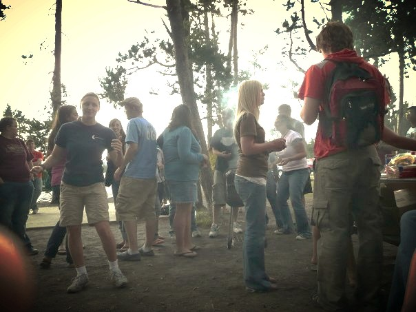

Sorry I’ve been incommunicado, friends. Life (as a whole) has been rather hectic and busy as of late. It seems this blog and my quiet times are the first things to go, and that’s a shame. But one thing that has kept coming up for me in the past couple weeks is community and its purpose. And in my churning, I’ve come to the conclusion that community is about genuine relationships and relationships are about community. But why the circular logic?
why relationships are about community
The first relationship was the Father, Son, and Holy Spirit in perfect community. Relationships are about community because of this first relationship. Because we are made in the image of God, our relationships mirror God’s relationship with Himself. Or, they’re meant to.
how relationships are about community
The essence of relationships is knowing the other intimately and being known similarly. It’s about disarming ourselves of the weapons of false pretenses, busyness, and facades we so often resort to. Relationships are about making each other feel loved to the point where hiding is no longer seen as necessary. Relationships are where love takes root and people connect. And what we really want is to connect, right? Allow me to qualify.
relationships are about community, but community is about relationships
It pains me to use such circular logic, but it does get to the point. The point of relationships is that there are no ulterior motives or schemes. A relationship is meant to be a deep connection between people. God’s relationship with Himself is a perfect form of connectedness. And it is for the purpose of the intimate connection itself, no other reason, that God engages in such deep relationships. There is value in connectedness, we need it, and so we need relationships for what they are by definition. We were made to be connected. We were made for deep, intimate, soul-baring connection. But most of us settle for activity partners.
What kind of relationships do you do you have in your life, friend? As it was always intended, relationships are about community, about connectedness. Would you classify your relationships as such? Would you say your relationships bear the image of our trinitarian God? If I’m honest with you, most of mine don’t. And I know I’m not alone.